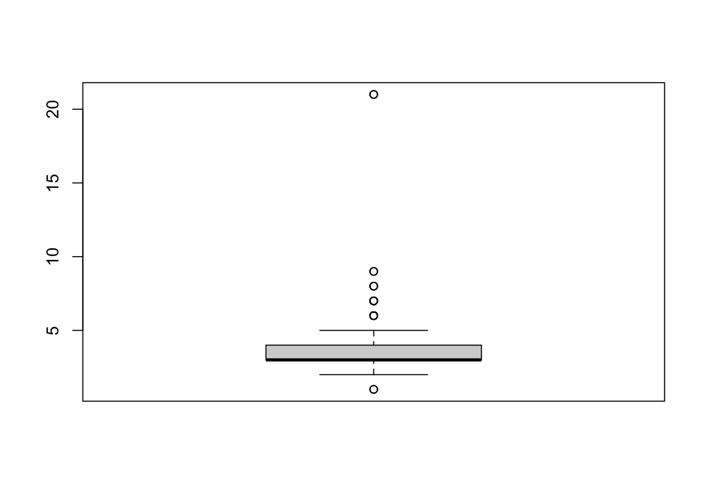

โหลดแพ็คเกจที่จะต้องใช้ในแบบฝึกหัดนี้
library(psych)
#install.packages("careless")
library(careless)
library(carData)
library(Hmisc)
library(haven) # for SPSS importข้อมูลที่ใช้ในครั้งนี้ เป็นข้อมูลที่ดัดแปลงจาก dataset bfi ในแพ็คเกจ psych ซึ่งเป็นข้อมูลของมาตรบุคลิกภาพ Big 5 โดยมีองค์ประกอบละ 5 ข้อ ได้แก่ Agreeableness: A1 - A5; Conscientiousness: C1-C5; Extraversion: E1-E5; Neuroticism: N1-N5; และ Openness to Experience: O1-O5
X คือ ID
ตัวแปร gender: Male = 1; Females = 2
education: 1 = HS (High School); 2 = finished HS; 3 = some college; 4 = college graduate; 5 = graduate degree
age อายุหน่วยเป็นปี
completed ตอบแบบสอบถามเสร็จสิ้นหรือไม่ 0 = incomplete; 1 = complete
# Import data & factorize variables
big5_data <- read.csv("SURVEY_Lab08_Data.csv", stringsAsFactors=TRUE)
big5_data$gender <- factor(big5_data$gender, labels = c("Male", "Females"))
big5_data$education <- factor(big5_data$education, labels = c("HS", "finished HS", "some college", "college graduate", "graduate degree"))
head(big5_data)## X A1 A2 A3 A4 A5 C1 C2 C3 C4 C5 E1 E2 E3 E4 E5 N1 N2 N3 N4 N5 O1 O2 O3 O4 O5 gender education age
## 1 61617 2 4 3 4 4 2 3 3 4 4 3 3 3 4 4 3 4 2 2 3 3 6 3 4 3 Male <NA> 16
## 2 61618 2 4 5 2 5 5 4 4 3 4 1 1 6 4 3 3 3 3 5 5 4 2 4 3 3 Females <NA> 18
## 3 61620 5 4 5 4 4 4 5 4 2 5 2 4 4 4 5 4 5 4 2 3 4 2 5 5 2 Females <NA> 17
## 4 61621 4 4 6 5 5 4 4 3 5 5 5 3 4 4 4 2 5 2 4 1 3 3 4 3 5 Females <NA> 17
## 5 61622 2 3 3 4 5 4 4 5 3 2 2 2 5 4 5 2 3 4 4 3 3 3 4 3 3 Male <NA> 17
## 6 61623 6 6 5 6 5 6 6 6 1 3 2 1 6 5 6 3 5 2 2 3 4 3 5 6 1 Females some college 21
## completed
## 1 1
## 2 1
## 3 1
## 4 1
## 5 1
## 6 1ถ้าข้อมูลเป็นไฟล์ข้อมูลจาก SPSS จะต้องใช้คำสั่งจากแพ็คเกจ haven เพื่อนำเข้าข้อมูล แต่ข้อมูลจะอยู่ในรูปแบบของตารางที่เรียกว่า tibble (tbl_df) ซึ่งไม่ใช่ data.frame ปกติ
big5_spss <- read_sav("SURVEY_Lab08_Data.sav")
big5_spss## # A tibble: 2,800 × 30
## ID A1 A2 A3 A4 A5 C1 C2 C3 C4 C5 E1 E2 E3 E4 E5 N1 N2 N3
## <dbl> <dbl> <dbl> <dbl> <dbl> <dbl> <dbl> <dbl> <dbl> <dbl> <dbl> <dbl> <dbl> <dbl> <dbl> <dbl> <dbl> <dbl> <dbl>
## 1 61617 2 4 3 4 4 2 3 3 4 4 3 3 3 4 4 3 4 2
## 2 61618 2 4 5 2 5 5 4 4 3 4 1 1 6 4 3 3 3 3
## 3 61620 5 4 5 4 4 4 5 4 2 5 2 4 4 4 5 4 5 4
## 4 61621 4 4 6 5 5 4 4 3 5 5 5 3 4 4 4 2 5 2
## 5 61622 2 3 3 4 5 4 4 5 3 2 2 2 5 4 5 2 3 4
## 6 61623 6 6 5 6 5 6 6 6 1 3 2 1 6 5 6 3 5 2
## 7 61624 2 5 5 3 5 5 4 4 2 3 4 3 4 5 5 1 2 2
## 8 61629 4 3 1 5 1 3 2 4 2 4 3 6 4 2 1 6 3 2
## 9 61630 4 3 6 3 3 6 6 3 4 5 5 3 NA 4 3 5 5 2
## 10 61633 2 5 6 6 5 6 5 6 2 1 2 2 4 5 5 5 5 5
## # … with 2,790 more rows, and 11 more variables: N4 <dbl>, N5 <dbl>, O1 <dbl>, O2 <dbl>, O3 <dbl>, O4 <dbl>,
## # O5 <dbl>, gender <dbl+lbl>, education <dbl+lbl>, age <dbl>, completed <dbl+lbl>class(big5_spss)## [1] "tbl_df" "tbl" "data.frame"ตาราง tibble สามารถจัดข้อมูลให้อ่านและใช้งานง่ายกว่า data.frame (เช่น แสดง data type บนหัวตาราง <dbl> = double หรือ แสดงผลแค่ 10 รายการแรกโดยอัตโนมัติแทนที่จะพิมพ์ข้อมูลทั้งหมดเหมือน data.frame) แต่ tibble ถูกออกแบบมาสำหรับใช้กับแพ็คเกจในกลุ่ม tidyverse เป็นหลัก จึงอาจมีปัญหากับคำสั่งบางตัวใน Base R
ในแบบฝึกหัดนี้ เราจะแปลง tibble กลับไปเป็น data.frame ก่อนด้วยคำสั่ง as.data.frame()
big5_data2 <- as.data.frame(big5_spss)
class(big5_data2)## [1] "data.frame"head(big5_data2)## ID A1 A2 A3 A4 A5 C1 C2 C3 C4 C5 E1 E2 E3 E4 E5 N1 N2 N3 N4 N5 O1 O2 O3 O4 O5 gender education age completed
## 1 61617 2 4 3 4 4 2 3 3 4 4 3 3 3 4 4 3 4 2 2 3 3 6 3 4 3 1 NA 16 1
## 2 61618 2 4 5 2 5 5 4 4 3 4 1 1 6 4 3 3 3 3 5 5 4 2 4 3 3 2 NA 18 1
## 3 61620 5 4 5 4 4 4 5 4 2 5 2 4 4 4 5 4 5 4 2 3 4 2 5 5 2 2 NA 17 1
## 4 61621 4 4 6 5 5 4 4 3 5 5 5 3 4 4 4 2 5 2 4 1 3 3 4 3 5 2 NA 17 1
## 5 61622 2 3 3 4 5 4 4 5 3 2 2 2 5 4 5 2 3 4 4 3 3 3 4 3 3 1 NA 17 1
## 6 61623 6 6 5 6 5 6 6 6 1 3 2 1 6 5 6 3 5 2 2 3 4 3 5 6 1 2 3 21 1ในกรณีที่ข้อมูลจากแบบสอบถามออนไลน์มี metadata ว่าผู้ตอบ ได้ตอบแบบสอบถามเสร็จสิ้นหรือไม่ (เช่น ตัวแปร completed ในข้อมูลนี้) เราสามารถใช้ตัวแปรนั้นเพื่อคัดข้อมูลที่ไม่ครบถ้วนออกได้
# Option 1: subset()
big5_complete <- subset(big5_data, subset = big5_data$completed == 1 )
# Option 2: logical index
big5_complete2 <- big5_data[big5_data$completed == 1, ] #choose only completed rows, retain all columns
identical(big5_complete, big5_complete2) # check whether both options give the same results## [1] TRUEในกรณีที่ไม่มีตัวแปรเพื่อบ่งบอกว่า ตอบครบถ้วนหรือไม่ เราอาจใช้เกณฑ์บางอย่างเพื่อตัดคำตอบที่ไม่สมบูรณ์ออก เช่น มีข้อมูลสูญหายตั้งแต่ 70% ขึ้นไป
เราจะเริ่มด้วยการหาว่ามี NA อยู่ตรงไหนบ้างในข้อมูลด้วย is.na จากนั้นรวมจำนวน NA แต่ละแถวด้วย rowSums แล้วหารด้วยจำนวนตัวแปร (25 ข้อแบบสอบถาม + 3 ข้อ demographic)
จากนั้นเราควรสำรวจข้อมูลด้วยตาอีกครั้งว่าเป็นข้อมูลที่ตอบไม่ครบถ้วนจริงหรือไม่ เช่น ข้อมูลของมาตรช่วงท้าย ๆ สูญหายเนื่องจากผู้ตอบทิ้งแบบสอบถามไปแล้ว
percentNA <- rowSums(is.na(big5_data[, 2:29]))/28 #calculate proportion of NA for each case. Column 2 is the first column for items. We also pretend that Column 30 does not exist.
big5_data[percentNA > .7, ] # show incomplete cases## X A1 A2 A3 A4 A5 C1 C2 C3 C4 C5 E1 E2 E3 E4 E5 N1 N2 N3 N4 N5 O1 O2 O3 O4 O5 gender education age
## 2252 66439 4 5 5 6 6 NA NA NA NA NA NA NA NA NA NA NA NA NA NA NA NA NA NA NA NA Females finished HS 20
## 2696 67360 2 4 3 5 4 NA NA NA NA NA NA NA NA NA NA NA NA NA NA NA NA NA NA NA NA Females some college 18
## completed
## 2252 0
## 2696 0big5_complete3 <- big5_data[percentNA <= .7, ] #select only data with 30% or more completion. ในโปรแกรม R ข้อมูลสูญหายจะถูกบันทึกเป็น NA โดยเราสามารถดูตำแหน่งของแถว (rows) ที่มี NA ได้ด้วยการนิเสธ (not) ! คำสั่ง complete.cases() ร่วมกับ which()
which(!complete.cases(big5_complete), arr.ind = TRUE)## [1] 1 2 3 4 5 7 9 10 12 13 14 16 17 18 19 20 21 22 28 31 34 35
## [23] 39 42 63 66 72 77 78 83 90 101 107 108 112 130 133 137 140 161 168 170 175 182
## [45] 196 198 199 201 202 204 205 206 208 209 212 213 214 215 221 222 228 232 237 241 242 244
## [67] 247 249 272 273 288 293 296 297 298 306 310 311 317 327 328 332 335 336 341 342 354 356
## [89] 357 359 367 381 384 388 389 396 397 402 404 422 424 425 427 442 448 451 452 467 470 484
## [111] 493 495 503 506 523 525 530 537 539 547 558 578 592 593 598 606 610 611 613 614 619 625
## [133] 627 638 639 645 655 664 666 672 676 677 678 679 683 688 689 690 702 703 704 705 706 707
## [155] 711 713 714 716 719 728 732 740 744 750 753 755 756 757 758 759 760 761 762 763 764 775
## [177] 781 786 789 792 795 798 799 800 802 803 805 806 814 817 818 822 824 827 830 832 834 845
## [199] 847 848 852 854 862 870 889 892 894 896 901 902 903 904 905 913 914 923 937 947 951 961
## [221] 964 967 976 978 980 995 1001 1006 1012 1014 1023 1030 1035 1037 1040 1042 1045 1054 1060 1068 1071 1081
## [243] 1084 1092 1095 1096 1100 1106 1107 1113 1119 1120 1122 1126 1132 1137 1141 1142 1143 1145 1153 1155 1163 1164
## [265] 1167 1172 1176 1180 1209 1216 1220 1221 1224 1228 1229 1236 1239 1241 1243 1246 1247 1251 1254 1258 1261 1275
## [287] 1292 1293 1294 1300 1307 1319 1329 1332 1335 1341 1342 1344 1345 1354 1355 1362 1371 1375 1384 1386 1389 1398
## [309] 1405 1407 1417 1419 1428 1434 1444 1454 1463 1471 1473 1474 1486 1492 1497 1503 1523 1527 1528 1531 1538 1551
## [331] 1557 1576 1579 1582 1583 1596 1601 1604 1606 1616 1626 1629 1634 1641 1648 1650 1655 1667 1683 1687 1692 1693
## [353] 1710 1712 1716 1723 1724 1745 1752 1764 1774 1776 1795 1804 1810 1816 1818 1821 1829 1837 1838 1840 1843 1849
## [375] 1853 1864 1866 1870 1873 1876 1877 1883 1887 1893 1896 1902 1908 1910 1914 1918 1920 1922 1932 1940 1953 1961
## [397] 1977 1982 1983 1986 1989 2009 2018 2021 2024 2031 2037 2040 2041 2057 2064 2070 2073 2089 2094 2099 2100 2103
## [419] 2132 2136 2141 2146 2148 2151 2163 2176 2177 2195 2204 2209 2215 2218 2221 2231 2237 2242 2246 2251 2270 2271
## [441] 2272 2290 2291 2303 2306 2313 2315 2328 2329 2333 2341 2349 2351 2355 2365 2367 2369 2371 2381 2383 2393 2395
## [463] 2398 2400 2402 2414 2417 2420 2421 2432 2447 2463 2464 2465 2468 2473 2474 2478 2481 2482 2485 2487 2493 2497
## [485] 2504 2514 2523 2528 2541 2542 2545 2552 2554 2557 2563 2569 2572 2577 2579 2588 2592 2593 2594 2595 2596 2597
## [507] 2598 2599 2600 2601 2602 2603 2606 2608 2609 2610 2611 2612 2613 2614 2615 2616 2617 2618 2619 2620 2621 2623
## [529] 2643 2644 2645 2646 2647 2649 2650 2651 2652 2656 2666 2679 2682 2690 2700 2701 2703 2704 2705 2706 2713 2715
## [551] 2722 2731 2732 2739 2742 2747 2748 2757 2760 2768 2777 2781 2787 2793 2794 2795แม้จะมีผู้ตอบที่มีข้อมูลสูญหายอยู่หลายคน แต่ก็คำสั่งนี้ยังไม่บอกปริมาณของข้อมูลที่สูญหายของแต่ละคน จึงยังไม่สามารถเหมารวมลบข้อมูลทิ้งได้ทั้งหมด
นอกจากนี้ แนวปฏิบัติในการบันทึกข้อมูลสูญหายนั้นอาจแตกต่างไปตามโปรแกรมสถิติที่คุ้นเคย ยกตัวอย่างเช่น ผู้วิจัยที่คุ้นเคยกับ SPSS มักจะบันทึกข้อมูลที่สูญหายด้วยเลข 9, 99, หรือ 999 แล้วตั้งค่าโปรแกรมให้ตีความเลขดังกล่าวเป็นค่า missing เพื่อแสดงให้เห็นว่าข้อมูลที่สูญหายนั้นเป็น user-defined missing (คือ ผู้วิจัยตรวจสอบแล้วว่าเป็นค่า missing จากแบบสอบถามจริงๆ) แทนที่จะเป็น system-missing (แสดงผลเป็นช่องว่างหรือ NA ซึ่งอาจเกิดจากความผิดพลาดในการบันทึกข้อมูล) แนวปฏิบัติเช่นนี้มีประโยชน์เพื่อสอบทานข้อมูลในกรณีที่ใช้แบบสอบถามกระดาษแล้วนำข้อมูลมาบันทึกเป็นไฟล์
แต่ในกรณีที่ แบบสอบถามถูกเก็บมาด้วยระบบคอมพิวเตอร์ตั้งแต่ต้น ค่าว่างหรือ NA นั้นแสดงถึงค่าสูญหายในการตอบอยู่แล้ว จึงไม่มีความจำเป็นต้องแปลงให้เป็นค่าเฉพาะอื่นใด เราปล่อยให้ค่าสูญหายเป็น NA ไว้ได้เลย
การเขียนโค้ด R เพื่อจัดการกับค่า missing นั้นไม่นิยมนำตัวเลขอื่นมาใช้แทนค่า missing แต่ให้ใช้ NA เลย เนื่องจากคำสั่งการวิเคราะห์อาจไม่รองรับค่า missing อื่น ๆ ที่ผู้ใช้กำหนด ดังนั้นเมื่อตรวจสอบข้อมูลเสร็จเรียบร้อยแล้ว จึงควรแปลงค่า user-defined missing (เช่น 999) ให้กลายเป็น NA ทั้งหมด (เราควรเขียนโน้ตตำแหน่งและเหตุผลในการเปลี่ยนไว้เพื่อใช้อ้างอิงในภายหลัง)
ในตัวอย่างนี้เราจะค้นหาข้อมูลที่อาจจะถูกบันทึกไว้เป็นค่า user-defined missing เช่น 9, 99, 999, หรือ 9999 แล้วแปลงให้กลายเป็น NA
miss9 <- which(big5_complete == 9, arr.ind = TRUE) # arr.ind gives index of row and col
miss9 # This variable has two indices: rows and columns.## row col
## 1492 1492 29miss9[, 1] # The first column shows rows that contain 9.## [1] 1492big5_complete[miss9[,1], ] # Use the index in extract cases that contains 9. This is the case of age == 9, which is possible. This is not a missing value. ## X A1 A2 A3 A4 A5 C1 C2 C3 C4 C5 E1 E2 E3 E4 E5 N1 N2 N3 N4 N5 O1 O2 O3 O4 O5 gender education age
## 1492 64780 1 4 5 NA 5 4 1 6 5 3 1 1 NA 6 4 6 6 5 2 6 3 3 NA 5 5 Females <NA> 9
## completed
## 1492 1miss99 <- which(big5_complete == 99, arr.ind = TRUE)
big5_complete[miss99[,1], ] # N1 is coded as 99, which is out of range. This is a user-defined missing value.## X A1 A2 A3 A4 A5 C1 C2 C3 C4 C5 E1 E2 E3 E4 E5 N1 N2 N3 N4 N5 O1 O2 O3 O4 O5 gender education age
## 203 62048 3 3 5 5 5 4 4 4 3 4 3 2 3 5 4 99 5 3 3 4 4 4 3 2 3 Females HS 18
## completed
## 203 1miss999 <- which(big5_complete == 999, arr.ind = TRUE)
big5_complete[miss999[,1], ] # There are many cases with 999 as missing values.## X A1 A2 A3 A4 A5 C1 C2 C3 C4 C5 E1 E2 E3 E4 E5 N1 N2 N3 N4 N5 O1 O2 O3 O4 O5 gender
## 161 61973 1 5 5 6 999 5 4 5 1 1 4 2 4 4 4 3 4 2 NA 1 5 1 4 4 4 Females
## 226 62102 1 6 6 6 4 1 5 6 999 999 999 999 999 999 999 2 5 5 4 4 5 5 5 6 1 Females
## 226.1 62102 1 6 6 6 4 1 5 6 999 999 999 999 999 999 999 2 5 5 4 4 5 5 5 6 1 Females
## 226.2 62102 1 6 6 6 4 1 5 6 999 999 999 999 999 999 999 2 5 5 4 4 5 5 5 6 1 Females
## 226.3 62102 1 6 6 6 4 1 5 6 999 999 999 999 999 999 999 2 5 5 4 4 5 5 5 6 1 Females
## 226.4 62102 1 6 6 6 4 1 5 6 999 999 999 999 999 999 999 2 5 5 4 4 5 5 5 6 1 Females
## 226.5 62102 1 6 6 6 4 1 5 6 999 999 999 999 999 999 999 2 5 5 4 4 5 5 5 6 1 Females
## 226.6 62102 1 6 6 6 4 1 5 6 999 999 999 999 999 999 999 2 5 5 4 4 5 5 5 6 1 Females
## education age completed
## 161 finished HS 36 1
## 226 graduate degree 26 1
## 226.1 graduate degree 26 1
## 226.2 graduate degree 26 1
## 226.3 graduate degree 26 1
## 226.4 graduate degree 26 1
## 226.5 graduate degree 26 1
## 226.6 graduate degree 26 1miss9999 <- which(big5_complete == 9999, arr.ind = TRUE)
big5_complete[miss9999[,1], ] # No data is coded as 9999## [1] X A1 A2 A3 A4 A5 C1 C2 C3 C4 C5
## [12] E1 E2 E3 E4 E5 N1 N2 N3 N4 N5 O1
## [23] O2 O3 O4 O5 gender education age completed
## <0 rows> (or 0-length row.names)แทนค่า 99 และ 999 ด้วย NA
big5_complete[big5_complete == 99] <- NA #replace 99 with NA
which(big5_complete == 99, arr.ind = TRUE) # no more data with 99## row colbig5_complete[big5_complete == 999] <- NA
which(big5_complete == 999, arr.ind = TRUE)## row colแบบสอบถามบุคลิกภาพนี้เป็นมาตร 6 ระดับ จาก 1-6 จึงไม่ควรมีคะแนนนอกเหนือจากนี้ เราจะใช้ describe จากแพ็กเกจ psych เพื่อตรวจสอบว่ามีตัวแปรใดที่มีค่านอกพิสัยบ้าง
begin <- which(colnames(big5_complete) == "A1")
end <- which(colnames(big5_complete) == "O5")
psych::describe(big5_complete[, begin:end]) # or just use [, 2:26]. We need psych::describe() because Hmisc also has describe()## vars n mean sd median trimmed mad min max range skew kurtosis se
## A1 1 2782 2.41 1.41 2 2.23 1.48 1 6 5 0.82 -0.31 0.03
## A2 2 2771 4.80 1.17 5 4.98 1.48 1 6 5 -1.12 1.05 0.02
## A3 3 2772 4.60 1.30 5 4.79 1.48 1 6 5 -1.00 0.44 0.02
## A4 4 2779 4.70 1.48 5 4.93 1.48 1 6 5 -1.03 0.03 0.03
## A5 5 2781 4.56 1.26 5 4.71 1.48 1 7 6 -0.84 0.15 0.02
## C1 6 2777 4.50 1.24 5 4.64 1.48 1 6 5 -0.85 0.30 0.02
## C2 7 2774 4.37 1.32 5 4.50 1.48 1 6 5 -0.74 -0.14 0.03
## C3 8 2778 4.30 1.29 5 4.42 1.48 1 6 5 -0.69 -0.13 0.02
## C4 9 2771 2.55 1.37 2 2.41 1.48 1 6 5 0.60 -0.62 0.03
## C5 10 2781 3.31 1.72 3 3.25 1.48 1 33 32 1.88 30.16 0.03
## E1 11 2773 2.97 1.63 3 2.86 1.48 1 6 5 0.37 -1.09 0.03
## E2 12 2780 3.14 1.60 3 3.07 1.48 1 6 5 0.22 -1.15 0.03
## E3 13 2771 4.00 1.35 4 4.07 1.48 1 6 5 -0.47 -0.47 0.03
## E4 14 2787 4.42 1.46 5 4.59 1.48 1 6 5 -0.82 -0.31 0.03
## E5 15 2775 4.42 1.33 5 4.56 1.48 1 6 5 -0.78 -0.09 0.03
## N1 16 2775 2.93 1.57 3 2.82 1.48 1 6 5 0.37 -1.01 0.03
## N2 17 2777 3.51 1.53 4 3.51 1.48 1 6 5 -0.08 -1.05 0.03
## N3 18 2786 3.22 1.60 3 3.15 1.48 1 6 5 0.15 -1.18 0.03
## N4 19 2762 3.19 1.57 3 3.12 1.48 1 6 5 0.20 -1.09 0.03
## N5 20 2769 2.97 1.62 3 2.85 1.48 1 6 5 0.38 -1.06 0.03
## O1 21 2776 4.82 1.13 5 4.96 1.48 1 6 5 -0.90 0.42 0.02
## O2 22 2798 2.71 1.56 2 2.56 1.48 1 6 5 0.59 -0.81 0.03
## O3 23 2770 4.44 1.22 5 4.56 1.48 1 6 5 -0.77 0.30 0.02
## O4 24 2784 4.89 1.22 5 5.09 1.48 1 6 5 -1.22 1.08 0.02
## O5 25 2778 2.49 1.33 2 2.34 1.48 1 6 5 0.74 -0.24 0.03จากข้อมูลแต่ละข้อคำถาม ค่า Min ไม่มีต่ำกว่า 1 แต่มีบางข้อที่คะแนนมากกว่า 6 (เช่น ตัวแปร A5 กับ C5)
เราจะแทนที่คะแนนที่มากกว่า 6 ด้วย NA
big5_complete[, begin:end][big5_complete[, begin:end] > 6] <- NA
psych::describe(big5_complete[, begin:end]) # no more out-of-range data## vars n mean sd median trimmed mad min max range skew kurtosis se
## A1 1 2782 2.41 1.41 2 2.23 1.48 1 6 5 0.82 -0.31 0.03
## A2 2 2771 4.80 1.17 5 4.98 1.48 1 6 5 -1.12 1.05 0.02
## A3 3 2772 4.60 1.30 5 4.79 1.48 1 6 5 -1.00 0.44 0.02
## A4 4 2779 4.70 1.48 5 4.93 1.48 1 6 5 -1.03 0.03 0.03
## A5 5 2780 4.56 1.26 5 4.71 1.48 1 6 5 -0.85 0.15 0.02
## C1 6 2777 4.50 1.24 5 4.64 1.48 1 6 5 -0.85 0.30 0.02
## C2 7 2774 4.37 1.32 5 4.50 1.48 1 6 5 -0.74 -0.14 0.03
## C3 8 2778 4.30 1.29 5 4.42 1.48 1 6 5 -0.69 -0.13 0.02
## C4 9 2771 2.55 1.37 2 2.41 1.48 1 6 5 0.60 -0.62 0.03
## C5 10 2780 3.30 1.63 3 3.24 1.48 1 6 5 0.07 -1.22 0.03
## E1 11 2773 2.97 1.63 3 2.86 1.48 1 6 5 0.37 -1.09 0.03
## E2 12 2780 3.14 1.60 3 3.07 1.48 1 6 5 0.22 -1.15 0.03
## E3 13 2771 4.00 1.35 4 4.07 1.48 1 6 5 -0.47 -0.47 0.03
## E4 14 2787 4.42 1.46 5 4.59 1.48 1 6 5 -0.82 -0.31 0.03
## E5 15 2775 4.42 1.33 5 4.56 1.48 1 6 5 -0.78 -0.09 0.03
## N1 16 2775 2.93 1.57 3 2.82 1.48 1 6 5 0.37 -1.01 0.03
## N2 17 2777 3.51 1.53 4 3.51 1.48 1 6 5 -0.08 -1.05 0.03
## N3 18 2786 3.22 1.60 3 3.15 1.48 1 6 5 0.15 -1.18 0.03
## N4 19 2762 3.19 1.57 3 3.12 1.48 1 6 5 0.20 -1.09 0.03
## N5 20 2769 2.97 1.62 3 2.85 1.48 1 6 5 0.38 -1.06 0.03
## O1 21 2776 4.82 1.13 5 4.96 1.48 1 6 5 -0.90 0.42 0.02
## O2 22 2798 2.71 1.56 2 2.56 1.48 1 6 5 0.59 -0.81 0.03
## O3 23 2770 4.44 1.22 5 4.56 1.48 1 6 5 -0.77 0.30 0.02
## O4 24 2784 4.89 1.22 5 5.09 1.48 1 6 5 -1.22 1.08 0.02
## O5 25 2778 2.49 1.33 2 2.34 1.48 1 6 5 0.74 -0.24 0.03นอกจากนี้ค่า mean และ sd ของข้อคำถามยังอยู่ในช่วงที่ดูเป็นปกติ
ต่อไปเราจะดูตัวแปร gender และ education เนื่องจากตัวแปรทั้งสองเป็น factor เมื่อเราใช้ summary โปรแกรม R จะสร้างตารางแจกแจงความถี่ให้ รวมถึงจำนวน NA (หากใช้คำสั่ง table จะไม่ปรากฏจำนวน NA)
summary(big5_complete$gender)## Male Females
## 919 1879summary(big5_complete$education)## HS finished HS some college college graduate graduate degree NA's
## 224 291 1248 394 418 223แม้ว่าข้อมูลโดยรวมของคนคนหนึ่งอาจจะไม่สูญหายถึงเกณฑ์คัดทิ้ง แต่ข้อมูลในระดับตัวแปรหรือมาตรย่อย (subscale) อาจไม่ครบถ้วนสมบูรณ์ จึงควรตรวจสอบความสมบูรณ์ของข้อมูลทีละตัวแปร และตัดสินใจว่าจะคัดข้อมูลทิ้งหรือไม่
สมมติให้เราตั้งเกณฑ์ว่าในแต่ละมาตรย่อยจะต้องมีข้อมูลสูญหายไม่เกินร้อยละ 50 ของข้อคำถามในองค์ประกอบหนึ่ง ๆ (เช่น ใน 5 ข้อต้องตอบอย่างน้อย 3 ข้อ)
เราจะเริ่มคำนวณจำนวนตัวแปรสูญหายของบุคลิกภาพแต่ละองค์ประกอบ โดยอันดับแรกคือการเลือกเฉพาะมาตรย่อยด้วยคำสั่ง subset() จากนั้นใช้ is.na() เพื่อดูว่าสร้าง logical 0-1 (FALSE-TRUE) ว่า ตำแหน่งใดเป็น NA จากนั้นเฉลี่ยค่าของแต่ละแถว ค่าเฉลี่ยที่ได้จะเป็นสัดส่วนของคำตอบ NA ของผู้ตอบแต่ละคน
# Agreeableness
perNAagree <- rowMeans(is.na(subset(big5_complete, select = A1:A5))) #percent of NA for each case
big5_complete[perNAagree > .5, ] # cases with more than 50% missing in Agreeableness## X A1 A2 A3 A4 A5 C1 C2 C3 C4 C5 E1 E2 E3 E4 E5 N1 N2 N3 N4 N5 O1 O2 O3 O4 O5 gender education age
## 676 63030 1 NA NA NA 5 6 NA NA NA 2 NA 2 NA 6 NA NA 3 4 NA NA NA 2 NA 4 NA Females some college 19
## 1122 63991 3 NA NA NA 3 3 NA NA NA 3 NA 3 NA 3 NA NA 3 3 NA NA NA 3 NA 3 NA Females some college 17
## 2307 66546 6 NA NA NA 4 6 NA NA NA 4 NA 4 NA 6 NA NA 4 6 NA NA NA 4 NA 6 NA Male <NA> 17
## completed
## 676 1
## 1122 1
## 2307 1# Conscientiousness
perNAconsci <- rowMeans(is.na(subset(big5_complete, select = C1:C5)))
big5_complete[perNAconsci > .5, ] ## X A1 A2 A3 A4 A5 C1 C2 C3 C4 C5 E1 E2 E3 E4 E5 N1 N2 N3 N4 N5 O1 O2 O3 O4 O5 gender education age
## 676 63030 1 NA NA NA 5 6 NA NA NA 2 NA 2 NA 6 NA NA 3 4 NA NA NA 2 NA 4 NA Females some college 19
## 1122 63991 3 NA NA NA 3 3 NA NA NA 3 NA 3 NA 3 NA NA 3 3 NA NA NA 3 NA 3 NA Females some college 17
## 1648 65168 3 3 NA NA 5 1 NA NA NA 1 NA 1 NA 5 2 NA 5 5 NA NA NA 1 NA 1 NA Females <NA> 13
## 2307 66546 6 NA NA NA 4 6 NA NA NA 4 NA 4 NA 6 NA NA 4 6 NA NA NA 4 NA 6 NA Male <NA> 17
## completed
## 676 1
## 1122 1
## 1648 1
## 2307 1# Extraversion
perNAextra <- rowMeans(is.na(subset(big5_complete, select = E1:E5)))
big5_complete[perNAextra > .5, ] ## X A1 A2 A3 A4 A5 C1 C2 C3 C4 C5 E1 E2 E3 E4 E5 N1 N2 N3 N4 N5 O1 O2 O3 O4 O5 gender education age
## 226 62102 1 6 6 6 4 1 5 6 NA NA NA NA NA NA NA 2 5 5 4 4 5 5 5 6 1 Females graduate degree 26
## 244 62142 1 6 4 6 6 5 4 5 1 2 NA NA NA NA NA 1 2 2 1 1 4 2 5 5 3 Male some college 40
## 676 63030 1 NA NA NA 5 6 NA NA NA 2 NA 2 NA 6 NA NA 3 4 NA NA NA 2 NA 4 NA Females some college 19
## 1122 63991 3 NA NA NA 3 3 NA NA NA 3 NA 3 NA 3 NA NA 3 3 NA NA NA 3 NA 3 NA Females some college 17
## 2307 66546 6 NA NA NA 4 6 NA NA NA 4 NA 4 NA 6 NA NA 4 6 NA NA NA 4 NA 6 NA Male <NA> 17
## completed
## 226 1
## 244 1
## 676 1
## 1122 1
## 2307 1# Neuroticism
perNAneuro <- rowMeans(is.na(subset(big5_complete, select = N1:N5)))
big5_complete[perNAneuro > .5, ] ## X A1 A2 A3 A4 A5 C1 C2 C3 C4 C5 E1 E2 E3 E4 E5 N1 N2 N3 N4 N5 O1 O2 O3 O4 O5 gender education age
## 676 63030 1 NA NA NA 5 6 NA NA NA 2 NA 2 NA 6 NA NA 3 4 NA NA NA 2 NA 4 NA Females some college 19
## 1122 63991 3 NA NA NA 3 3 NA NA NA 3 NA 3 NA 3 NA NA 3 3 NA NA NA 3 NA 3 NA Females some college 17
## 1648 65168 3 3 NA NA 5 1 NA NA NA 1 NA 1 NA 5 2 NA 5 5 NA NA NA 1 NA 1 NA Females <NA> 13
## 2307 66546 6 NA NA NA 4 6 NA NA NA 4 NA 4 NA 6 NA NA 4 6 NA NA NA 4 NA 6 NA Male <NA> 17
## completed
## 676 1
## 1122 1
## 1648 1
## 2307 1# Openness
perNAopen <- rowMeans(is.na(subset(big5_complete, select = O1:O5)))
big5_complete[perNAopen > .5, ] ## X A1 A2 A3 A4 A5 C1 C2 C3 C4 C5 E1 E2 E3 E4 E5 N1 N2 N3 N4 N5 O1 O2 O3 O4 O5 gender education age
## 676 63030 1 NA NA NA 5 6 NA NA NA 2 NA 2 NA 6 NA NA 3 4 NA NA NA 2 NA 4 NA Females some college 19
## 1122 63991 3 NA NA NA 3 3 NA NA NA 3 NA 3 NA 3 NA NA 3 3 NA NA NA 3 NA 3 NA Females some college 17
## 1648 65168 3 3 NA NA 5 1 NA NA NA 1 NA 1 NA 5 2 NA 5 5 NA NA NA 1 NA 1 NA Females <NA> 13
## 2307 66546 6 NA NA NA 4 6 NA NA NA 4 NA 4 NA 6 NA NA 4 6 NA NA NA 4 NA 6 NA Male <NA> 17
## completed
## 676 1
## 1122 1
## 1648 1
## 2307 1เรารวบรวมแถว (rows) ที่มีปัญหาข้อมูลไม่ครบโดยด้วย OR |
tobedeleted <- perNAagree > .5 | perNAconsci > .5 | perNAextra > .5 | perNAneuro > .5 | perNAopen > .5
big5_complete[tobedeleted, ]## X A1 A2 A3 A4 A5 C1 C2 C3 C4 C5 E1 E2 E3 E4 E5 N1 N2 N3 N4 N5 O1 O2 O3 O4 O5 gender education age
## 226 62102 1 6 6 6 4 1 5 6 NA NA NA NA NA NA NA 2 5 5 4 4 5 5 5 6 1 Females graduate degree 26
## 244 62142 1 6 4 6 6 5 4 5 1 2 NA NA NA NA NA 1 2 2 1 1 4 2 5 5 3 Male some college 40
## 676 63030 1 NA NA NA 5 6 NA NA NA 2 NA 2 NA 6 NA NA 3 4 NA NA NA 2 NA 4 NA Females some college 19
## 1122 63991 3 NA NA NA 3 3 NA NA NA 3 NA 3 NA 3 NA NA 3 3 NA NA NA 3 NA 3 NA Females some college 17
## 1648 65168 3 3 NA NA 5 1 NA NA NA 1 NA 1 NA 5 2 NA 5 5 NA NA NA 1 NA 1 NA Females <NA> 13
## 2307 66546 6 NA NA NA 4 6 NA NA NA 4 NA 4 NA 6 NA NA 4 6 NA NA NA 4 NA 6 NA Male <NA> 17
## completed
## 226 1
## 244 1
## 676 1
## 1122 1
## 1648 1
## 2307 1เราจะคัดข้อมูลด้านบนทิ้งไป แล้วสร้างเป็น dataframe ใหม่
big5_var_complete <- big5_complete[!tobedeleted, ]
# OR
big5_var_complete2 <- big5_complete[perNAagree <= .5 & perNAconsci <= .5 & perNAextra <= .5 & perNAneuro <= .5 & perNAopen <= .5, ]
identical(big5_var_complete, big5_var_complete2) #same results## [1] TRUEกรณีที่ผู้ตอบให้คะแนนเดียวกันในทุกข้อ แสดงว่าผู้ตอบไม่ได้ใส่ใจในการตอบคำถาม ข้อมูลลักษณะนี้ควรถูกคัดทิ้ง
คำสั่ง longstring ในแพ็กเกจ careless ช่วยระบุความยาวของการทิ้งดิ่งได้
long <- longstring(big5_var_complete) # calculate the max length of identical response
boxplot(long) # cases with 20 consecutive identical responses are suspicious
big5_var_complete[long > 10, ] # use 10 string as a cutoff## X A1 A2 A3 A4 A5 C1 C2 C3 C4 C5 E1 E2 E3 E4 E5 N1 N2 N3 N4 N5 O1 O2 O3 O4 O5 gender education age
## 562 62783 5 5 5 5 5 5 5 5 5 5 5 5 5 5 5 5 5 5 5 5 5 5 5 5 5 Male some college 25
## 1430 64642 1 1 1 1 1 1 1 1 1 1 1 1 1 1 1 1 1 1 1 1 1 1 1 1 1 Male some college 23
## 1555 64953 5 5 5 5 5 5 5 5 5 5 5 5 5 5 5 5 5 5 5 5 5 5 5 5 5 Male some college 20
## 1563 64968 3 3 3 3 3 3 3 3 3 3 3 3 3 3 3 3 3 3 3 3 3 3 3 3 3 Females finished HS 19
## 2043 65974 1 1 1 1 1 1 1 1 1 1 1 1 1 1 1 1 1 1 1 1 1 1 1 1 1 Male some college 19
## completed
## 562 1
## 1430 1
## 1555 1
## 1563 1
## 2043 1big5_clean <- big5_var_complete[long <= 10, ] # select response with less than 10 longstring and save to a new variableการแทนค่าข้อมูลสูญหายด้วยค่าเฉลี่ย หรือค่ามัธยฐานของตัวแปรนั้น ๆ ทำได้โดยคำสั่ง impute ในแพ็กเกจ Hmisc
โดยค่าตั้งต้น impute จะแทนค่าด้วย median แต่ถ้าต้องการให้ใช้ค่า mean ทำได้โดยเพิ่ม option fun = mean
# Agreeableness
big5_clean$A1.im <- impute(big5_clean$A1, fun = mean)
big5_clean$A2.im <- impute(big5_clean$A2, fun = mean)
big5_clean$A3.im <- impute(big5_clean$A3, fun = mean)
big5_clean$A4.im <- impute(big5_clean$A4, fun = mean)
big5_clean$A5.im <- impute(big5_clean$A5, fun = mean)
# Repeat for all scales (tedious & prone to errors)
### OR ###
# You can also use for loop (preferred)
big5_impute <- big5_clean
begin # begin is the column number of A1, remember from above?## [1] 2end # end is the column number of O5## [1] 26for (i in begin:end) {
big5_impute[,i] <- impute(big5_clean[,i], fun = mean)
}
all(complete.cases(big5_impute[, begin:end])) # complete cases for everyone## [1] TRUEpsych::describe(big5_impute[, begin:end]) #notice that all n are equal.## vars n mean sd median trimmed mad min max range skew kurtosis se
## A1 1 2787 2.41 1.40 2 2.23 1.48 1 6 5 0.83 -0.29 0.03
## A2 2 2787 4.80 1.16 5 4.98 1.48 1 6 5 -1.12 1.08 0.02
## A3 3 2787 4.61 1.29 5 4.79 1.48 1 6 5 -1.00 0.47 0.02
## A4 4 2787 4.70 1.47 5 4.93 1.48 1 6 5 -1.03 0.05 0.03
## A5 5 2787 4.56 1.25 5 4.71 1.48 1 6 5 -0.85 0.17 0.02
## C1 6 2787 4.51 1.23 5 4.64 1.48 1 6 5 -0.85 0.32 0.02
## C2 7 2787 4.37 1.31 5 4.50 1.48 1 6 5 -0.74 -0.12 0.02
## C3 8 2787 4.30 1.28 5 4.42 1.48 1 6 5 -0.69 -0.12 0.02
## C4 9 2787 2.55 1.37 2 2.41 1.48 1 6 5 0.60 -0.60 0.03
## C5 10 2787 3.30 1.62 3 3.25 1.48 1 6 5 0.07 -1.21 0.03
## E1 11 2787 2.97 1.63 3 2.86 1.48 1 6 5 0.38 -1.08 0.03
## E2 12 2787 3.14 1.60 3 3.07 1.48 1 6 5 0.22 -1.14 0.03
## E3 13 2787 4.00 1.35 4 4.07 1.48 1 6 5 -0.47 -0.45 0.03
## E4 14 2787 4.42 1.45 5 4.59 1.48 1 6 5 -0.82 -0.30 0.03
## E5 15 2787 4.42 1.33 5 4.57 1.48 1 6 5 -0.78 -0.07 0.03
## N1 16 2787 2.93 1.57 3 2.83 1.48 1 6 5 0.37 -1.00 0.03
## N2 17 2787 3.51 1.52 4 3.51 1.48 1 6 5 -0.08 -1.03 0.03
## N3 18 2787 3.21 1.60 3 3.15 1.48 1 6 5 0.16 -1.17 0.03
## N4 19 2787 3.19 1.56 3 3.12 1.48 1 6 5 0.20 -1.07 0.03
## N5 20 2787 2.97 1.61 3 2.85 1.48 1 6 5 0.38 -1.04 0.03
## O1 21 2787 4.82 1.12 5 4.96 1.48 1 6 5 -0.89 0.41 0.02
## O2 22 2787 2.71 1.56 2 2.56 1.48 1 6 5 0.59 -0.81 0.03
## O3 23 2787 4.44 1.21 5 4.56 1.48 1 6 5 -0.77 0.32 0.02
## O4 24 2787 4.90 1.21 5 5.10 1.48 1 6 5 -1.22 1.10 0.02
## O5 25 2787 2.49 1.32 2 2.34 1.48 1 6 5 0.74 -0.22 0.03มาตรวัดโดยทั่วไปมักจะมีการกลับคะแนน จึงต้องทำการกลับคะแนนก่อนค่อยหาค่าเฉลี่ยของด้านย่อยแต่ละด้าน
key ของมาตร Big Five นี้เป็นดังนี้
ในที่นี้จะแสดงวิธีกลับและรวมคะแนนของมาตร agreeableness และ conscientiousness
# agreeableness
big5_impute$A1.re <- 7 - big5_impute$A1 # Reverse = (max_scale +1) - data
head(big5_impute[c("A1", "A1.re")]) #see if reverse scoring is correct## A1 A1.re
## 1 2 5
## 2 2 5
## 3 5 2
## 4 4 3
## 5 2 5
## 6 6 1big5_impute$agree_mean <- rowMeans(big5_impute[c("A1.re", "A2", "A3", "A4", "A5")])
head(big5_impute$agree_mean)## [1] 4.0 4.2 3.8 4.6 4.0 4.6#conscientiousness
big5_impute$C4.re <- 7 - big5_impute$C4
big5_impute$C5.re <- 7 - big5_impute$C5
big5_impute$conscientious_mean <- rowMeans(big5_impute[c("C1", "C2", "C3", "C4.re", "C5.re")])
# Subscale mean for each person
head(big5_impute[c("agree_mean", "conscientious_mean")])## agree_mean conscientious_mean
## 1 4.0 2.8
## 2 4.2 4.0
## 3 3.8 4.0
## 4 4.6 3.0
## 5 4.0 4.4
## 6 4.6 5.6# Group means for each scale
psych::describe(big5_impute[c("agree_mean", "conscientious_mean")])## vars n mean sd median trimmed mad min max range skew kurtosis se
## agree_mean 1 2787 4.65 0.89 4.8 4.72 0.89 1 6 5 -0.77 0.42 0.02
## conscientious_mean 2 2787 4.27 0.95 4.4 4.31 0.89 1 6 5 -0.41 -0.17 0.02# repeat for other subscalespsych::scoreItemsคำสั่ง scoreItems ในแพ็คเกจ psych ช่วยให้เราสามารถคำนวณคะแนน กลับคะแนน และแทนค่าสูญหายได้ในครั้งเดียว
input ของคำสั่ง มี
keys list กำหนดน้ำหนัก -1, 0, 1 สำหรับข้อที่ต้องการกลับคะแนน ไม่คิดคะแนน คิดตามปกติ (ตามลำดับ) เราจะสร้าง list โดยตั้งชื่อมาตร เช่น agree = ชื่อตัวแปรที่จะใช้คำนวณ โดยตัวที่ต้องการกลับคะแนนให้ใส่ลบไว้ด้านหน้า ทำเช่นนี้ไปจนครบทุกมาตร
items data.frame ที่มีคะแนนดิบของมาตร
min ค่าต่ำสุดที่เป็นไปได้ของมาตร (ใช้สำหรับกลับคะแนน)
max ค่าสูงสุดที่เป็นไปได้ของมาตร (ใช้สำหรับกลับคะแนน)
totals TRUE = total scores; FALSE (default) = average scores
missing TRUE = impute data; FALSE = complete cases only
impute imputation method: “median”, “mean”, “none”
delete ตัดข้อที่ไม่มี variance ทิ้ง (ใช้ตรวจสอบการทิ้งดิ่งได้ในกรณีที่มาตรย่อยค่อนข้างยาว แต่ถ้ามาตรสั้น 2-3 ข้อก็มีความเป็นไปได้ว่าผู้ตอบอาจจะเลือกคำตอบเหมือนกันทุกข้อในมาตรย่อย กรณีมาตรย่อยสั้น ควรดูการทิ้งดิ่งจากภาพรวมด้วย careless::longstring() แทน)
Output จากคำสั่ง scoreItems เป็น list ที่มีหลายตัวแปรอยู่ในนั้น ค่าคะแนนที่แปลงแล้วจะอยู่ใน object ที่ชื่อว่า $score
keys.list <- list(agree = c("-A1","A2","A3","A4","A5"),
conscientious=c("C1","C2","C3","-C4","-C5"),
extraversion=c("-E1","-E2","E3","E4","E5"),
neuroticism=c("N1","N2","N3","N4","N5"),
openness = c("O1","-O2","O3","O4","-O5"))
big5_scores <- scoreItems(key = keys.list, items = big5_clean, min = 1, max = 6, missing = TRUE, impute = "mean") #output is a list with many info.
head(big5_scores$scores) # access calculated scores## agree conscientious extraversion neuroticism openness
## 1 4.0 2.8 3.8 2.8 3.0
## 2 4.2 4.0 5.0 3.8 4.0
## 3 3.8 4.0 4.2 3.6 4.8
## 4 4.6 3.0 3.6 2.8 3.2
## 5 4.0 4.4 4.8 3.2 3.6
## 6 4.6 5.6 5.6 3.0 5.0big5_calculated <- cbind(big5_impute, big5_scores$scores) # combine data.frame
head(big5_calculated)## X A1 A2 A3 A4 A5 C1 C2 C3 C4 C5 E1 E2 E3 E4 E5 N1 N2 N3 N4 N5 O1 O2 O3 O4 O5 gender education age
## 1 61617 2 4 3 4 4 2 3 3 4 4 3 3 3 4 4 3 4 2 2 3 3 6 3 4 3 Male <NA> 16
## 2 61618 2 4 5 2 5 5 4 4 3 4 1 1 6 4 3 3 3 3 5 5 4 2 4 3 3 Females <NA> 18
## 3 61620 5 4 5 4 4 4 5 4 2 5 2 4 4 4 5 4 5 4 2 3 4 2 5 5 2 Females <NA> 17
## 4 61621 4 4 6 5 5 4 4 3 5 5 5 3 4 4 4 2 5 2 4 1 3 3 4 3 5 Females <NA> 17
## 5 61622 2 3 3 4 5 4 4 5 3 2 2 2 5 4 5 2 3 4 4 3 3 3 4 3 3 Male <NA> 17
## 6 61623 6 6 5 6 5 6 6 6 1 3 2 1 6 5 6 3 5 2 2 3 4 3 5 6 1 Females some college 21
## completed A1.im A2.im A3.im A4.im A5.im A1.re agree_mean C4.re C5.re conscientious_mean agree conscientious
## 1 1 2 4 3 4 4 5 4.0 3 3 2.8 4.0 2.8
## 2 1 2 4 5 2 5 5 4.2 4 3 4.0 4.2 4.0
## 3 1 5 4 5 4 4 2 3.8 5 2 4.0 3.8 4.0
## 4 1 4 4 6 5 5 3 4.6 2 2 3.0 4.6 3.0
## 5 1 2 3 3 4 5 5 4.0 4 5 4.4 4.0 4.4
## 6 1 6 6 5 6 5 1 4.6 6 4 5.6 4.6 5.6
## extraversion neuroticism openness
## 1 3.8 2.8 3.0
## 2 5.0 3.8 4.0
## 3 4.2 3.6 4.8
## 4 3.6 2.8 3.2
## 5 4.8 3.2 3.6
## 6 5.6 3.0 5.0psych::describe(big5_calculated[, c(37,40:42)]) # group means for agree and conscientious from each method## vars n mean sd median trimmed mad min max range skew kurtosis se
## agree_mean 1 2787 4.65 0.89 4.8 4.72 0.89 1 6 5 -0.77 0.42 0.02
## conscientious_mean 2 2787 4.27 0.95 4.4 4.31 0.89 1 6 5 -0.41 -0.17 0.02
## agree 3 2787 4.65 0.89 4.8 4.72 0.89 1 6 5 -0.77 0.42 0.02
## conscientious 4 2787 4.27 0.95 4.4 4.31 0.89 1 6 5 -0.41 -0.17 0.02จะเห็นได้ว่าค่าที่ได้จาก scoreItems (สองบรรทัดล่าง) ตรงกับที่เราคำนวณเอง (สองบรรทัดบน มีคำว่า _mean ตามหลัง)
เราจะหาข้อมูลที่มีค่าสุดโต่งเกิน ±3 SD
เนื่องจากไม่มี function สำหรับวิธีนี้โดยตรง เราจะเขียน function outlier_3sd ขึ้นมาเองเพื่อใช้หาว่าแถวใดมีค่าสุดโต่ง
outlier_3sd <- function(var){
m <- mean(var)
s <- sd(var)
loc <- which(var < m - (3*s) | var > m + (3*s))
value <- var[loc]
output <- cbind(loc, value)
colnames(output) <- c("Location", "Outlier_Values")
return(output)
}
outlier_3sd(big5_calculated$agree) ## Location Outlier_Values
## [1,] 108 1.2
## [2,] 118 1.8
## [3,] 245 1.6
## [4,] 447 1.6
## [5,] 658 1.0
## [6,] 661 1.6
## [7,] 1054 1.4
## [8,] 1379 1.2
## [9,] 1397 1.8
## [10,] 1519 1.8
## [11,] 1743 1.8
## [12,] 1776 1.8
## [13,] 2487 1.8
## [14,] 2594 1.8
## [15,] 2605 1.8
## [16,] 2677 1.6
## [17,] 2742 1.6outlier_3sd(big5_calculated$conscientious)## Location Outlier_Values
## [1,] 20 1.2
## [2,] 97 1.4
## [3,] 795 1.0
## [4,] 1002 1.0
## [5,] 1208 1.0
## [6,] 1212 1.2
## [7,] 1296 1.0
## [8,] 1500 1.0
## [9,] 1519 1.4
## [10,] 2552 1.2
## [11,] 2616 1.4
## [12,] 2656 1.2outlier_3sd(big5_calculated$extraversion) # no outliers## Location Outlier_Valuesoutlier_3sd(big5_calculated$neuroticism) # no outliers## Location Outlier_Valuesoutlier_3sd(big5_calculated$openness)## Location Outlier_Values
## [1,] 186 1.4
## [2,] 575 2.0
## [3,] 795 1.2
## [4,] 835 2.0
## [5,] 2353 2.0
## [6,] 2704 2.0boxplot(big5_calculated[, 41:45])hist(big5_calculated[, 41:45])